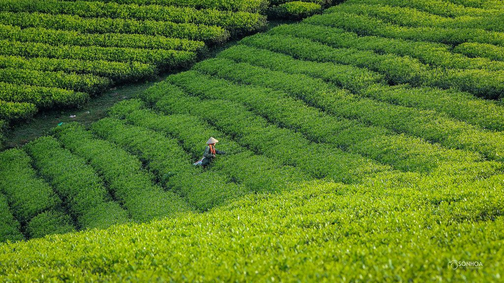
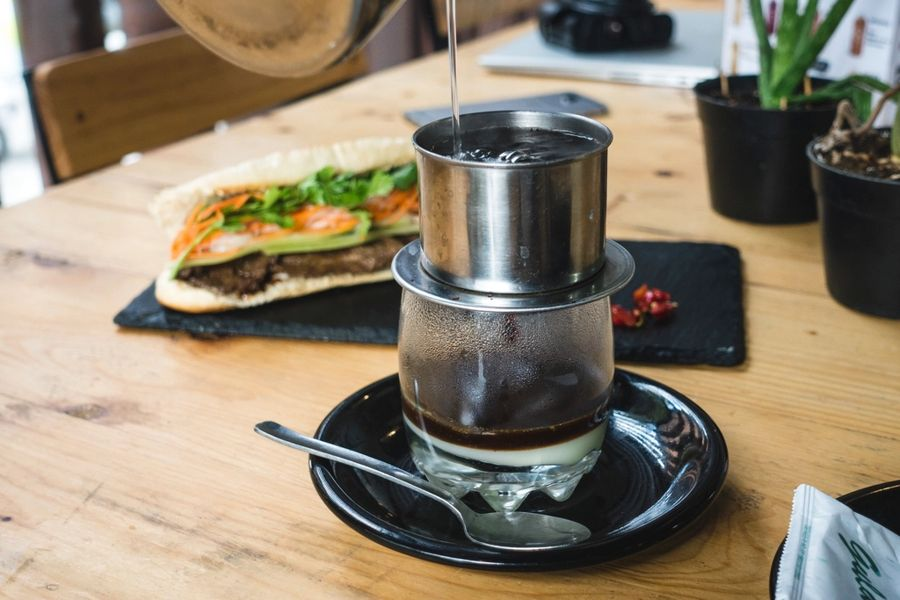

Chậm lại, để vị quả lên tiếng
Mộc Quả bắt đầu từ một giàn hồng treo gió ở Đà Lạt và niềm tin rằng đặc sản Việt xứng đáng được trao tay như một món quà cao cấp.
“Mộc là mộc mạc — nguyên bản, không phẩm màu, không vội vàng. Quả là trái ngọt của đất và người trồng. Chúng tôi chỉ làm một việc: giữ trọn vẹn vị ngon ấy, và trao nó đi thật đẹp.”

Bắt đầu từ nhà vườn
Chúng tôi làm việc trực tiếp với các hộ trồng ở Đà Lạt, Đồng Tháp, Bình Thuận, Hưng Yên và Lục Ngạn — thu mua đúng mùa, đúng độ chín, trả giá công bằng.
Mỗi vùng quả có một người “giữ lửa” của Mộc Quả, theo sát từ vườn tới mẻ sấy.

Công nghệ sấy tôn trọng quả
Sấy lạnh, sấy thăng hoa hay treo gió truyền thống — mỗi loại quả được chọn cách làm phù hợp nhất để giữ màu, hương và độ dẻo giòn tự nhiên.
Bốn điều chúng tôi giữ
Đúng mùa
Chỉ làm khi quả vào chính vụ — có lúc hết hàng, chúng tôi chấp nhận.
Ít đường
Ưu tiên vị ngọt tự nhiên; nhiều dòng không thêm đường.
Minh bạch
Mã lô truy xuất vùng trồng, ngày thu hái và ngày sấy.
Trao tay đẹp
Hộp thủ công, thiệp viết tay, giao quà đúng hẹn.
Lịch mùa quả
Ăn đúng mùa là ăn ngon nhất.
Hành trình (minh hoạ)
Giàn hồng treo gió đầu tiên tại Đà Lạt.
Mở rộng hợp tác tới miền Tây, Bình Thuận, Hưng Yên, Lục Ngạn.
Ra mắt bộ sưu tập hộp quà sơn mài & quà doanh nghiệp.
Hạt dinh dưỡng, trà & cà phê đặc sản, mứt kẹo truyền thống.